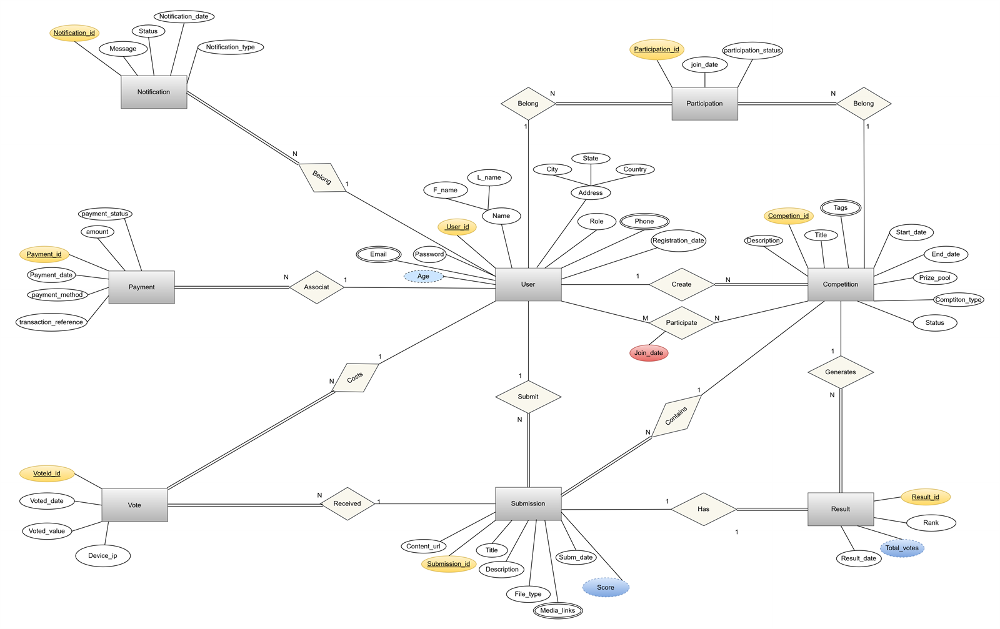

Online Competition & Voting Platform Database
An enterprise-grade Microsoft SQL Server relational database built from scratch — design, ERD, implementation, and advanced querying. 15 normalized tables handle users, competitions, submissions, judge scoring, community voting (1–5) with duplicate-vote prevention, results, payments, and notifications, all enforced by PK/FK relationships and CHECK constraints. Includes realistic sample data and a rich T-SQL showcase of joins, subqueries, EXISTS, and set operations.
SQL Server
T-SQL
ERD
Database Design